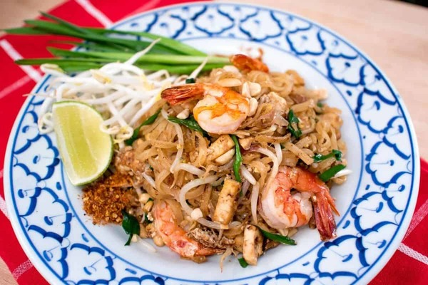

Pad Thai Recipe

Traditional pad thai shrimp with all of the classic garnishes.
Cooking pad thai is actually quite easy; after all it's a
stir-fry! But the fully-loaded, traditional version has a lot of
ingredients, not all of which are easy to find. For many restaurants some
ingredients may not be available, the many prep may be too complex for
their simple operation, or they need to keep the cost of such a staple
item low. So things get left out and substituted.
Ingredients:
-
Sauce:
- palm sugar
- water
- tamarind
- fish sauce
-
Pad Thai:
Instructions:
-
To make sauce:
- Add palm sugar to a small pot and melt over medium heat
- Bring sauce to a simmer, then turn off heat.
- tamarind
- fish sauce
-
To make Pad Thai:
- Cut drained noodles once with scissors so they are half as long. This makes them easier to toss and separate in the wok.
- In a bowl, combine tofu, garlic, shallots, preserved radish, dried shrimp, and chili flakes.
- Heat a wok or a large nonstick skillet over high heat and add just enough oil to coat the bottom. Sear shrimp, or whatever protein you're using, until done and remove them from pan.
-
read more...